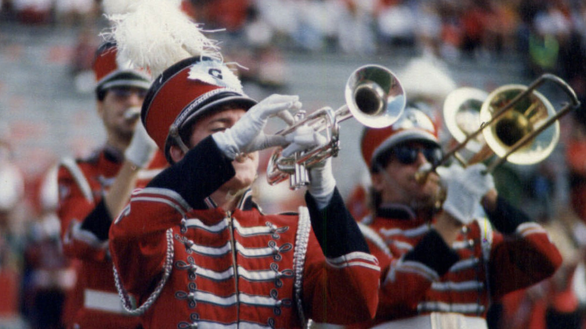

The UGA Redcoat Band had it's start in 1905, it consisted originally of 20 military cadets. For the first 25 years of the bands existence it would consist solely of these cadets. After comparitavely competing against Lousiana State University in football in 1935, the "Golden Band from Tigerland" became the inspiration UGA needed to fund and expand their band program. 1955 would be the year that completely changed the face of the Redcoat band, with the arrival of new director Roger Dancz and his wife Phyllis Dancz. Phyllis became director of auxillaries and ultimately created both the dance-line widely known as the Georgettes and the flag line to add color and motion to the bands half-time performances. The Redcoat Band holds many awards and accolations for their contribution to entertainment and football over the decades. The most substantial award being the Sudler Trophy in the year 2000.